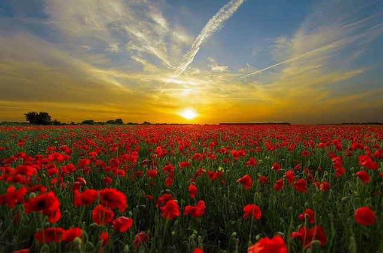

About franz...
He is?

Sabina's lover and a Geneva professor and idealist.
Franz falls in love with Sabina, whom he considers a liberal and romantically tragic Czech dissident.
He is a kind and compassionate man. As one of the novel's dreamers,
Franz bases his actions on loyalty to the memories of his mother and Sabina.
His life revolves completely around books and academia,
eventually to the extent that he seeks lightness and ecstasy by participating in marches and protests,
the last of which is a march in Thailand to the border with Cambodia. In Bangkok after the march,
he is mortally wounded during a mugging.